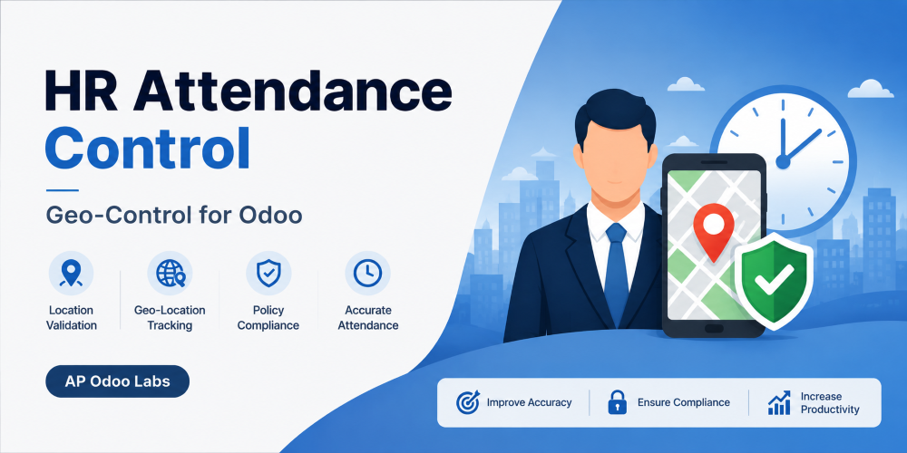
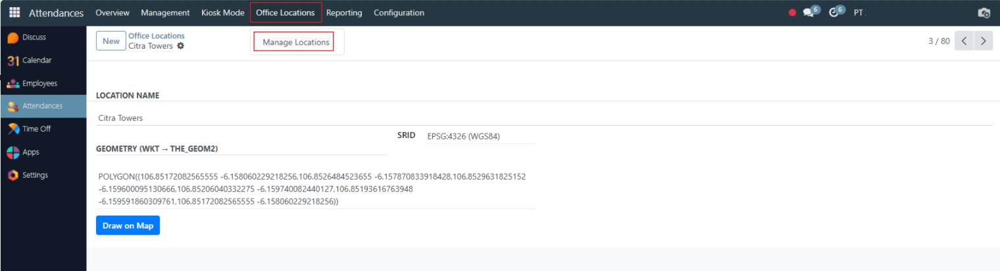
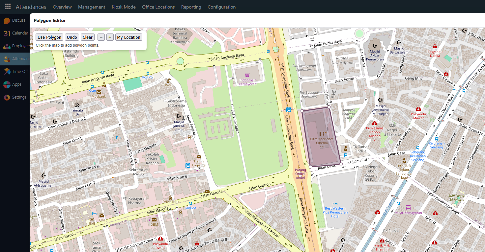
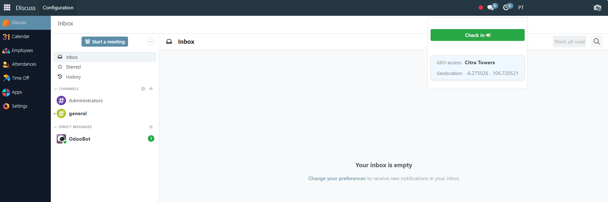
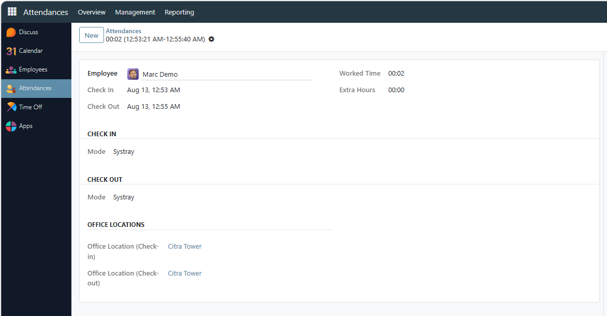

HR Attendance Control
Polygon-based office identification for Odoo 19 Attendance
Odoo 19 OPL-1 PostGIS GPS

Overview
Record the office associated with each employee check-in and check-out. The module compares browser GPS coordinates with administrator-defined PostGIS polygons and stores the matching office on the attendance record.
Identification, not enforcement: attendance outside configured polygons is recorded as outside the office. This version does not block the attendance action.
Features
- Configure multiple office polygons using WKT or the included map editor.
- Display the detected office and GPS coordinates in the attendance menu.
- Store check-in/check-out latitude, longitude, and matching office.
- Show office information in attendance form and list views.
- Loading guard and short-lived geolocation cache for a smoother systray workflow.
- No analytics, telemetry, or remotely downloaded executable code.
Requirements and availability
- Odoo 19 Community or Enterprise.
- Odoo.sh or on-premise deployment; not compatible with Odoo Online.
- PostgreSQL with PostGIS installed and enabled using
CREATE EXTENSION IF NOT EXISTS postgis;. - HTTPS and browser location permission for GPS access.
- The polygon editor loads OpenStreetMap tile images and requires internet access while editing.
Configuration
- Enable PostGIS before installing the module.
- Install the module and open Attendances > Office Locations.
- Create an office and draw or paste its polygon boundary.
- Use the standard Odoo systray Check In / Check Out action.
- Review the saved GPS and office fields on the attendance record.
Privacy
After the user grants browser permission, GPS coordinates are read and stored on check-in/check-out together with the matching configured office. The module does not collect usage statistics. OpenStreetMap receives standard tile-image requests only when an administrator opens the polygon editor.
Screenshots




Support
Installation, configuration, and product support: support@apodoolabs.com